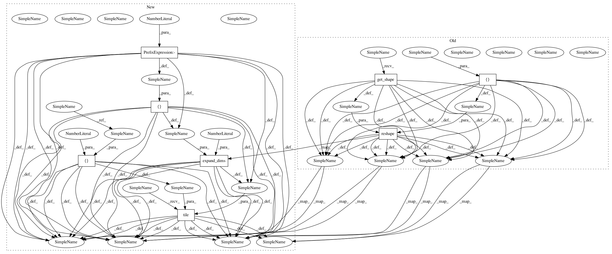

ef02e000358699dd92b9640510c71af2b5152e52,niftynet/layer/loss_segmentation.py,,generalised_dice_loss,#,164
Before Change
if weight_map is not None:
n_classes = prediction.shape[1].value
weight_map_nclasses = tf.reshape(
tf.tile(weight_map, [n_classes]), prediction.get_shape())
ref_vol = tf.sparse_reduce_sum(
weight_map_nclasses * one_hot, reduction_axes=[0])
intersect = tf.sparse_reduce_sum(
weight_map_nclasses * one_hot * prediction, reduction_axes=[0])
seg_vol = tf.reduce_sum(
tf.multiply(weight_map_nclasses, prediction), 0)
else:
ref_vol = tf.sparse_reduce_sum(one_hot, reduction_axes=[0])
intersect = tf.sparse_reduce_sum(one_hot * prediction,
reduction_axes=[0])
seg_vol = tf.reduce_sum(prediction, 0)
if type_weight == "Square":
weights = tf.reciprocal(tf.square(ref_vol))
elif type_weight == "Simple":
weights = tf.reciprocal(ref_vol)
elif type_weight == "Uniform":
weights = tf.ones_like(ref_vol)
else:
raise ValueError("The variable type_weight \"{}\""
"is not defined.".format(type_weight))
new_weights = tf.where(tf.is_inf(weights), tf.zeros_like(weights), weights)
weights = tf.where(tf.is_inf(weights), tf.ones_like(weights) *
tf.reduce_max(new_weights), weights)
generalised_dice_numerator = \
2 * tf.reduce_sum(tf.multiply(weights, intersect))
generalised_dice_denominator = \
tf.reduce_sum(tf.multiply(weights, seg_vol + ref_vol)) + 1e-6
generalised_dice_score = \
generalised_dice_numerator / generalised_dice_denominator
return 1 - generalised_dice_score
After Change
one_hot = labels_to_one_hot(ground_truth, tf.shape(prediction)[-1])
if weight_map is not None:
n_classes = prediction.shape[1].value
// weight_map_nclasses = tf.reshape(
// tf.tile(weight_map, [n_classes]), prediction.get_shape())
weight_map_nclasses = tf.tile(
tf.expand_dims(tf.reshape(weight_map, [-1]), 1), [1, n_classes])
ref_vol = tf.sparse_reduce_sum(
weight_map_nclasses * one_hot, reduction_axes=[0])
intersect = tf.sparse_reduce_sum(
weight_map_nclasses * one_hot * prediction, reduction_axes=[0])
seg_vol = tf.reduce_sum(
tf.multiply(weight_map_nclasses, prediction), 0)
else:
ref_vol = tf.sparse_reduce_sum(one_hot, reduction_axes=[0])
intersect = tf.sparse_reduce_sum(one_hot * prediction,
reduction_axes=[0])
seg_vol = tf.reduce_sum(prediction, 0)
if type_weight == "Square":
weights = tf.reciprocal(tf.square(ref_vol))
elif type_weight == "Simple":
weights = tf.reciprocal(ref_vol)
elif type_weight == "Uniform":
weights = tf.ones_like(ref_vol)
else:
raise ValueError("The variable type_weight \"{}\""
"is not defined.".format(type_weight))
new_weights = tf.where(tf.is_inf(weights), tf.zeros_like(weights), weights)
weights = tf.where(tf.is_inf(weights), tf.ones_like(weights) *
tf.reduce_max(new_weights), weights)
generalised_dice_numerator = \
2 * tf.reduce_sum(tf.multiply(weights, intersect))
// generalised_dice_denominator = \
// tf.reduce_sum(tf.multiply(weights, seg_vol + ref_vol)) + 1e-6
generalised_dice_denominator = tf.reduce_sum(
tf.multiply(weights, tf.maximum(seg_vol + ref_vol, 1)))
generalised_dice_score = \
generalised_dice_numerator / generalised_dice_denominator
generalised_dice_score = tf.where(tf.is_nan(generalised_dice_score), 1.0,
generalised_dice_score)
In pattern: SUPERPATTERN
Frequency: 3
Non-data size: 8
Instances
Project Name: NifTK/NiftyNet
Commit Name: ef02e000358699dd92b9640510c71af2b5152e52
Time: 2018-07-25
Author: carole.sudre.12@ucl.ac.uk
File Name: niftynet/layer/loss_segmentation.py
Class Name:
Method Name: generalised_dice_loss
Project Name: NifTK/NiftyNet
Commit Name: ef02e000358699dd92b9640510c71af2b5152e52
Time: 2018-07-25
Author: carole.sudre.12@ucl.ac.uk
File Name: niftynet/layer/loss_segmentation.py
Class Name:
Method Name: generalised_dice_loss
Project Name: NifTK/NiftyNet
Commit Name: ef02e000358699dd92b9640510c71af2b5152e52
Time: 2018-07-25
Author: carole.sudre.12@ucl.ac.uk
File Name: niftynet/layer/loss_segmentation.py
Class Name:
Method Name: dice
Project Name: NifTK/NiftyNet
Commit Name: ef02e000358699dd92b9640510c71af2b5152e52
Time: 2018-07-25
Author: carole.sudre.12@ucl.ac.uk
File Name: niftynet/layer/loss_segmentation.py
Class Name:
Method Name: dice_nosquare